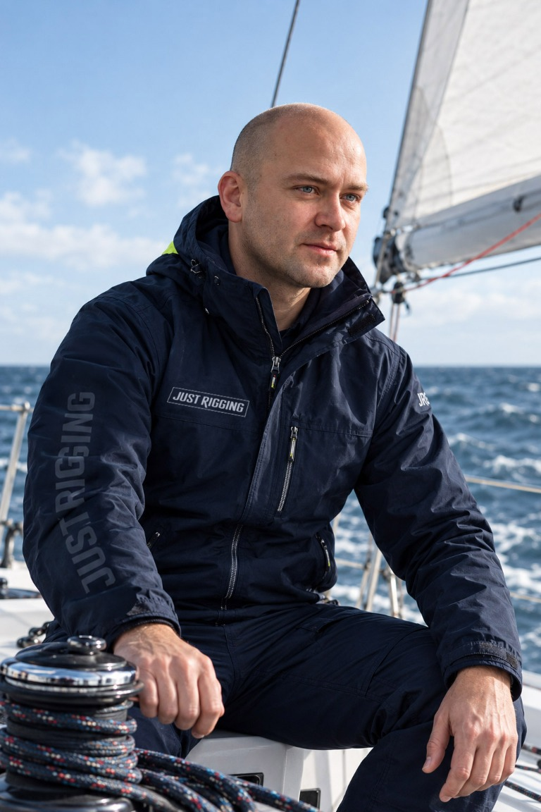
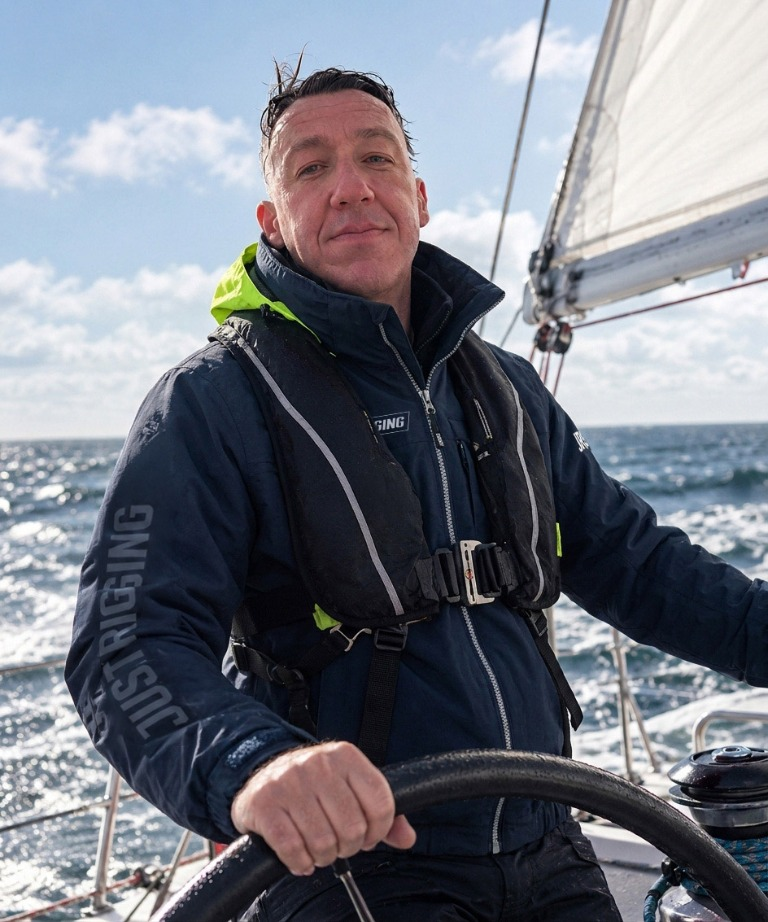

PERFORMANCE
MARINE SYSTEMS








01 / Nasza misja
Wiedza, która buduje
pewność na wodzie.
 Każdy detal ma znaczenie
Każdy detal ma znaczenie
Just Rigging to owoc wieloletniej pasji żeglarstwa, doświadczenia i profesjonalizmu nieuznającego kompromisów. Naszą misją jest dostarczanie rozwiązań, których priorytetami są trwałość, użyteczność, estetyka i bezpieczeństwo zapewnione w każdych warunkach. Dziesięciolecia doświadczeń na rynkach całego świata pozwalają zapewnić obsługę jachtów żaglowych dla najbardziej wymagających Klientów.
02 / Kompetencje
Rozwiązania dla jachtów żaglowychCzym się
zajmujemy.
Od pojedynczego komponentu po pełną opiekę nad projektem. Cztery obszary, jeden standard wykonania...
 01
01Maszty i takielunek
Aluminium · Węgiel · Drewno ↗ 02
02Okucia i osprzęt
Bezpieczeństwo w każdym detalu ↗ 03Custom design
Projekt od podstaw ↗ 04
04Architektoniczne systemy cięgnowe
Technologia w architekturze ↗03 / Współpraca
Od założeń do sprawdzonego rozwiązaniaJasny kurs.
Sprawdzony proces.
- 01
Rozmowa
Poznajemy potrzeby i warunki pracy jachtu.
- 02
Projekt
Dobieramy rozwiązanie i komponenty.
- 03
Wdrożenie
Koordynujemy wykonanie i logistykę.
- 04
Testy
Weryfikujemy działanie i bezpieczeństwo.
- 05
Optymalizacja
Dopracowujemy rozwiązanie w praktyce.
04 / Zespół
Ludzie
morza.
